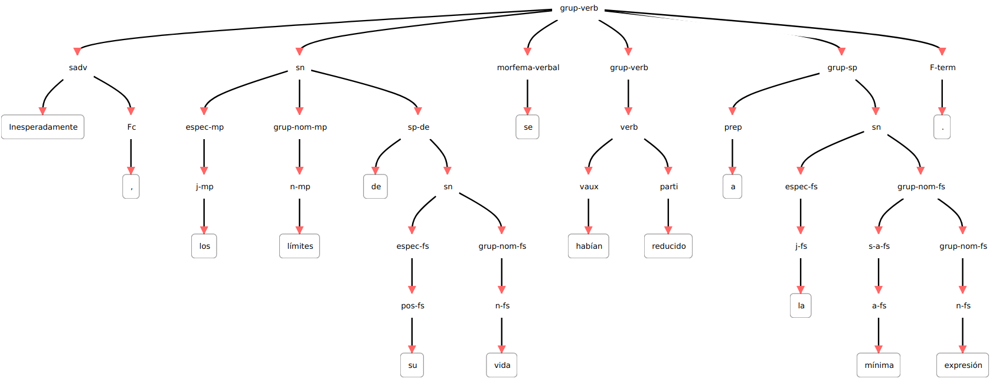

Minería de textos y procesamiento del lenguaje natural.
Contents
2. Minería de textos y procesamiento del lenguaje natural.#
Minería de textos es el conjunto de técnicas y herramientas desarrolladas para extraer información de grandes colecciones textuales, tanto información implícita como explícita.
Esa información está codificada en textos, es decir, en un idioma o lengua. La minería de textos necesita, por tanto, interpretar (en mayor o menor medida) los textos y a partir de esa interpretación extraer la información. La disciplina computacional que idea y desarrolla sistemas para la interpretación lingüística de los textos es el procesamiento del lenguaje natural (PLN o NLP por sus siglas en inglés: Natural Language Processing), disciplina híbrida entre la lingüística y la computación.
Este primer bloque de la asignatura es una introducción a los conceptos fundamentales del procesamiento del lenguaje natural. Se expondrán los principales problemas a los que se enfrenta y métodos de resolución, así como herramientas y recursos disponibles para la minería de textos.
2.1. Qué es un texto (y por qué es difícil su procesamiento automático).#
La información de un texto está codificada en signos. El sistema que especifica cómo son esos signos, cómo se combinan y cómo se intepretan es el “idioma” o “lengua”. El ser humano que conoce el idioma en que está codificado el texto está capacitado para interpretarlo. Esta interpretación va desde la percepción visual de los signos (letras) hasta la acción o reacción provocada por esa información. Este proceso podemos esquematizarlo en cuatro pasos:
Reconocimiento visual o auditivo (lectura o escucha) de los signos lingüísticos (palabras, frases, etc.)
Procesamiento sintáctico: cómo se combinan esos signos dentro del texto.
Procesamiento semántico: qué signficado asumen los signos teniendo en cuenta el resto de signos y el contexto comunicativo.
Reacción: cómo actúa el ser humano a partir de la interprtación del texto (reir un chiste, asimilar información, cerrar una ventana, saludar… o no hacer nada.)
Para este proceso los ordenadores necesitan, sin embargo, algoritmos complejos.
A continuación se presentan algunos de los principales problemas a los que se enfrenta la máquina para interpretar un texto. Para el ser humano pueden resutar “fáciles” (de hecho muchos seres humanos no son capaces de ver el problema interpretativo), pero al ordenador le generan bastantes problemas.
Ambigüedad. Es el principal problema. Aquí un caso de ambigüedad léxica (luego se verán más casos de ambigüedad):
“Te espero en el banco.” | ¿Qué es “banco” en esta oración?, ¿qué otros significados puede tener la palabra “banco”?
Vaguedad:
“Tu hermano es todavía muy joven” | ¿A qué edad se deja de ser joven?
“Pasados unos días llegamos a nuestro destino” | ¿Cuántos días? ¿Cuándo llegaron?
Conocimiento del mundo, conocimiento implícito y sentido común:
Visualiza la siguiente conversación entre un humano y un ordenador (HAL 9000) e intenta deducir qué información implícita (conocimiento del mundo, etc.) debe asumir el ordenador para poner entenderse con el humano: https://www.youtube.com/watch?v=Mme2Aya_6Bc
Implicaciones:
“Oí ronquidos y decidí no encender la luz” | ¿Qué tiene que ver la luz con los ronquidos?
Metáforas y usos simbólicos del lenguaje: la metáfora NO es solo un fenómeno literario, sino un mecanismo básico de cognición humana (Lakoff y Johnson 1980). Es muy común, por ejemplo, utilizar metafóricamente términos concretos para hablar de cuestiones abstractas, como en estos casos:
“Deja de perder el tiempo y ponte a estudiar” | Tiempo :=: dinero
“A ver si se te mete esto en la cabeza de una vez” | Mente :=: objeto hueco que se puede llenar
Denotación y emociones: junto a su significado denotativo (el del diccionario, el concepto prototípico asociado a la palabra), las palabras pueden transmitir un abanico de significados connotativos: asociaciones socio-culturales relacionadas con la palabra.
“Por fin en casa” | casa = “Edificio para habitar” (RAE), pero también “hogar, familia, lugar entrañable, seguridad, acogimiento, tranquilidad, descanso, reposo, etc…”
…
2.2. Niveles de descripción lingüística.#
Para estudiar las lenguas en toda su complejidad, los lingüistas las han seccionado en diferentes niveles llamados niveles de descripción lingüística. El PLN se basa en estos niveles para desarrollar sus sistemas.
En un proceso interpretativo[¹] (del texto a la interpretación), los niveles de descripción lingüística son los siguientes:
2.2.1. Imagen o sonidos extralingüístico.#
Percepción por la vista (tipografía) o el oído (fonética). Detección de que la imagen o sonido es un objeto lingüístico y por tanto puede ser interpretado, y separación del resto de imágenes/sonidos no lingüísticos (ruido).
2.2.2. Nivel fono-fonológico.#
Percepción y representación mental (prototípica y abstracta) de los sonidos (o su imágenes tipográficas correspondiente). Sistema fonológico basado en rasgos articulatorios mediante oposiciones: modo de articulación (vocales y consonantes), punto de articulación (bilabial, labiodental, interdenta, nasal, palatal, velar, etc.) y vibración de las cuerdas vocales (sonoras - sordas).
Los sistemas de PLN de este nivel son los sistemas de reconocimiento del habla o análisis de voz. El primero transforman una cadena de sonido hablado en una representación textual procesable (texto digital codificado en UTF-8, etc.).
Esta tarea se denomina “Automatic Speech Recognition”. Algunos de los problemas que trata de resolver son:
discriminación del habla de otros tipos de sonidos (ruido);
separar la cadena sonora (audio) en palabras u otras unidades significativas (sílabas, etc.)
relacionar sonidos lingüísticos con su fonema correspondiente;
detectar y procesar la entonación;
….
Por ejemplo, al hablar decimos todas las palabras juntas. ¿Sabrías separar la siguiente cadena para que sea una oración gramatical? (Hay dos soluciones según se separen las letras)
Ej. “leasinvergüenza”
El proceso contrario, del texto a habla, son los sistemas de síntesis de voz.
Esta tarea no será tratada en este curso. Si quieres más información, consulta el capítulo 16 del libro de Juravsky y Martin (2022) Speech and Language Processing, disponible en línea: https://web.stanford.edu/~jurafsky/slp3/16.pdf (lectura de ampliacón OPCIONAL. No entra en evaluación).
2.2.3. Nivel morfológico.#
La palabra como unidad básica. Elementos constitutivos de las palabras (lexemas, morfemas, etc.), tipos de palabras (nombre, verbo, adjetivo, etc.), así como otro fenómenos lingüísticos como derivación, composición, etc.
En PLN, este nivel está relacionado con los sistemas de análisis categorial o Part of Speech taggers (PoS_tagger). Estos sistemas suelen realizar cuatro tareas de análisis:
a. tokenización
b. lematización
c. análisis morfológico (stemmers, separación de lexemas y morfemas, especificación de rasgos morfológicos)
d. análisis categorial (clasificación de palabras según la categoría gramatical).
Ejemplo: “Inesperadamente,los límites de su vida se habían reducido a la mínima expresión.”
1 Inesperadamente inesperadamente RG RG pos=adverb|type=general
2 , , Fc Fc pos=punctuation|type=comma
3 los el DA0MP0 DA pos=determiner|type=article|gen=masculine|num=plural
4 límites límite NCMP000 NC pos=noun|type=common|gen=masculine|num=plural
5 de de SP SP pos=adposition|type=preposition
6 su su DP3CSN DP pos=determiner|type=possessive|person=3|gen=common|num=singular|possessornum=invariable
7 vida vida NCFS000 NC pos=noun|type=common|gen=feminine|num=singular
8 se se P00CN00 P0 pos=pronoun|gen=common|num=invariable
9 habían haber VAII3P0 VAI pos=verb|type=auxiliary|mood=indicative|tense=imperfect|person=3|num=plural
10 reducido reducir VMP00SM VMP pos=verb|type=main|mood=participle|num=singular|gen=masculine
11 a a SP SP pos=adposition|type=preposition
12 la el DA0FS0 DA pos=determiner|type=article|gen=feminine|num=singular
13 mínima mínimo AQ0FS00 AQ pos=adjective|type=qualificative|gen=feminine|num=singular
14 expresión expresión NCFS000 NC pos=noun|type=common|gen=feminine|num=singular
15 . . Fp Fp pos=punctuation|type=period
2.2.4. Nivel sintáctico#
Dentro de una oración, las palabras se agrupan en constituyentes superiores (sintagmas) y establecen relaciones jerárquicas (dependencias) entre ellas. Estas relaciones determinan el significado final de la oración, por lo que es necesario determinarlas.
En PLN, los sistemas que realizan el análisis sintáctico reciben el nombre genérico de parser. Estos deben dar cuenta sobre todo de la ambigüedad estructural. Salida:

Ambigüedad: “Vi a tu hermano con los prismáticos”
2.2.5. Nivel semántico#
Todo aquello relacionado con el significado del texto.
Semántica léxica: el significado de las palabras. Si se parte de un diccionario, la tarea de PLN correspondiente se denomina word sense disambiguation, pero actualmente hay otros métodos de análisis léxico-semántico.
Ej. El caso de “banco” antes comentado.
Si el significado no está en un diccionario (no está “lexicalizado”), entonces son sentidos metafóricos y/o simbólicos.
Semántica oracional: el significado del conjunto de palabras que forman una oración. Hay diferentes modelos: representación lógica, roles semánticos, semántica de eventos, etc.
Ejemplo:
<predicate head_token="t1.10" id="P1.1" sense="reducir.00" words="reducido">
<argument from="t1.1" head_token="t1.1" role="AM-MNR" to="t1.2" words="Inesperadamente ,"/>
<argument from="t1.3" head_token="t1.4" role="A1" to="t1.7" words="los límites de su vida"/>
<argument from="t1.11" head_token="t1.11" role="A2" to="t1.14" words="a la mínima expresión"/>
</predicate>
2.2.6. Nivel textual#
La comunicación no se realiza mediante palabras u oraciones, sino mediante textos. EL texto es la unidad comunicativa superior. En este nivel se estudian fenómenos lingüísticos que relacionan oraciones: marcas de conexión entre oraciones o secciones, correferencias (anáforas y catáforas), coherencia general del texto, temas…
Diferentes sistemas de PLN se encargan de estos fenómenos. La resolución de la correferencia es quizá de los más interesantes en Minería de textos por su relación con la extracción de entidades.
Ej: “Juan había ido elaborando una ruta perfecta de bares que le permitía ver su programa favorito”.
2.2.7. Nivel pragmático#
La comunicación, por último, no se produce de manera aislada, sino dentro de una situación comunicativa donde aparece una persona que crea el texto, otra que lo interpreta, un contexto, una intención, etc. Todos estos aspectos entran dentro de la pragmática.
Algunos fenómenos que requieren tener en cuenta la situación pragmática:
Referencias de lugar (“aquí”), temporales (“hoy”) o personales (“tú”), así como referencias concretas (“este libro”).
Actos de habla: el propio acto de hablar (locutivo), la intención por la que se habla (afirmas, agradecer, insultar, opinar, etc.), llamado acto “ilocutivo”, y las consecuencias del acto en el receptor (perlocutivo).
Ej: USUARIO: “¿Puedo darte un beso?” SIRI: “¿Qué tal si busco “comportamiento inapropiado” en Internet?”
Intención del hablante: humor, ironía… Y engaños, mentiras, persuasión, etc.
Agentes conversacionales y gestión del diálogo.
etc.
2.3. Métodos de PLN.#
Si bien las primeras propuestas de aplicar métodos computacionales la texto datan de los años 40 (con el nacimiento de la teoría de los lenguajes formales), no es hasta los 70 cuando empiezan a aparecer los primeros sistemas de PLN (SHRDLU de Winograd, 1972).
Desde los primeros años se establecieron dos métodos generales:
2.3.1. Métodos simbólicos (racionalismo):#
Estos intentan describir el funcionamiento del idioma (en cualquiera de sus fenómenos y niveles) mediante reglas formales. En general, tratan de formalizar nuestro conocimiento de la gramática de un idioma en reglar que la máquina pueda entender.
Este paradigma fue predominante en los años 80. Hoy día, si bien en investigación apenas tiene presencia (es raro encontrar artículos que presenten sistemas simbólicos), en la industria sigue siendo un paradigma utilizado. Los sistemas de PLN de muchas empresas dependen de gramáticas y otros recursos lingüísticos (diccionarios) que se crean y mantienen a mano por expertos (lingüistas).
La gran ventaja de los métodos simbólicos es su precisión. Permite tratar fenómenos lingüísticos muy concretos (y a veces poco probables). Adolecen, sin embargo, de cobertura, pues es complejo prever y tratar todos los fenómenos lingüísticos que puede haber en un texto mediante reglas.
2.3.2. Métodos estadísticos (empirismo).#
La aplicación de métodos estadísticos al procesamiento lingüístico no es nueva, pero tuvo especial desarrollo a partir de los años 90 del siglo XX.
Hoy día estos métodos siguen los modelos de aprendizaje automático: supervisado, no supervisado y semi-supervisado. Dependen siempre de la disponibiliad de corpus (selección de muestras lingüísticas); bien para los procesos de aprendizaje, bien para procesos de evaluación o bien para ambos.
Los corpus pueden ser de dos tipos:
corpus planos (plain), si ningún tipo de marca, etiqueta o anotación, donde se muestra el idioma tal cual es, tal cual la utilizan los hablantes nativos.
corpus anotados, en los que se introducen etiquetas formales que representan el conocimiento lingüístico. Este conocimiento (fonético, morfológico, sintáctico, semántico o pragmático) está en principio implícito en el texto, y con la etiqueta se hace explícito.
Los corpus anotados son la fuente principal para los procesos de aprendizaje supervisado.
Las tareas que se desarrollan con estos métodos son:
- especificar y sistematizar el fenómeno lingüístico
- formalizar y representar en el corpus sin ambigüedades
- seleccionar el algoritmo apropiado para la detección del fenómeno y su clasificación según sus rasgos.
2.3.3. Métodos neuronales#
En los últimos años se han desarrollado los procesos neuronales a partir del deep learning.
Hay área donde los modelos neuronales han hallado la solución a problemas complejos. En el caso del PLN, los sistemas de análisis de voz funcionan prácticamente ya sin problemas gracias a estos modelos. El PLN en general, sin embargo, aún presenta muchos problemas irresolubles (Manning 2015), lo cual quizá sea la mayor prueba de la complejidad del análisis lingüístico.
2.4. Conclusión#
En esta sesión se han presentado los análisis básicos de PLN, necesarios para preprocesar un corpus antes de realizar tareas de minería de textos. Además de estas tareas de procesamiento lingüístico básico, el PLN tiene definidas otras tareas como las expuestas aquí:
2.4.1. Actividad para pensar:#
Consulta las siguientes oraciones e intenta determinar qué tipo de ambigüedad tienen:
2.5. Bibliografía#
Bird, Steven; Klein, Ewan y Loper, Edward (2009) Natural Language Processing with Python. Analyzing Text with the Natural Language Toolkit O’Reilly Media. https://www.nltk.org/book_1ed/
Juravsky y Martin (2020) Speech and Language Processing. https://web.stanford.edu/~jurafsky/slp3/
Lakoff y Johnson (1980) Metáforas de la vida cotidiana Madrid, Cátedra, 1986.
Manning, Christopher D. (2015) “Computational Linguistics and Deep Learning” Computational Linguistics 41 (4) p.701-707
Schubert, Lenhart, “Computational Linguistics”, The Stanford Encyclopedia of Philosophy (Spring 2020 Edition), Edward N. Zalta (ed.), https://plato.stanford.edu/archives/spr2020/entries/computational-linguistics/
[¹] En proceso contrario sería la generación: de la idea al texto.